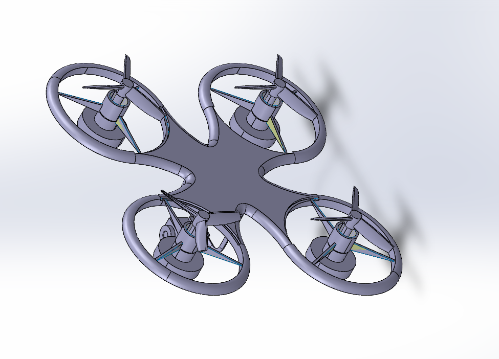
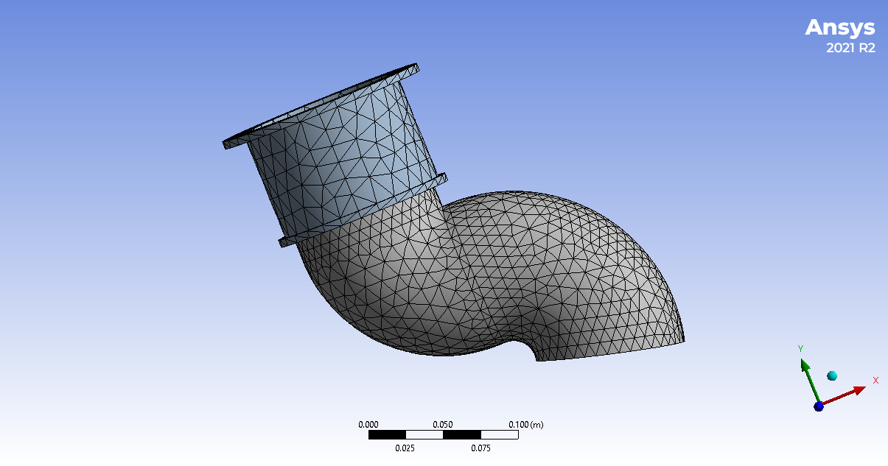
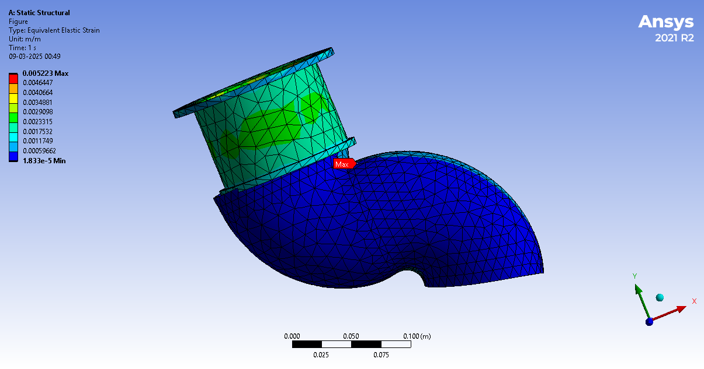
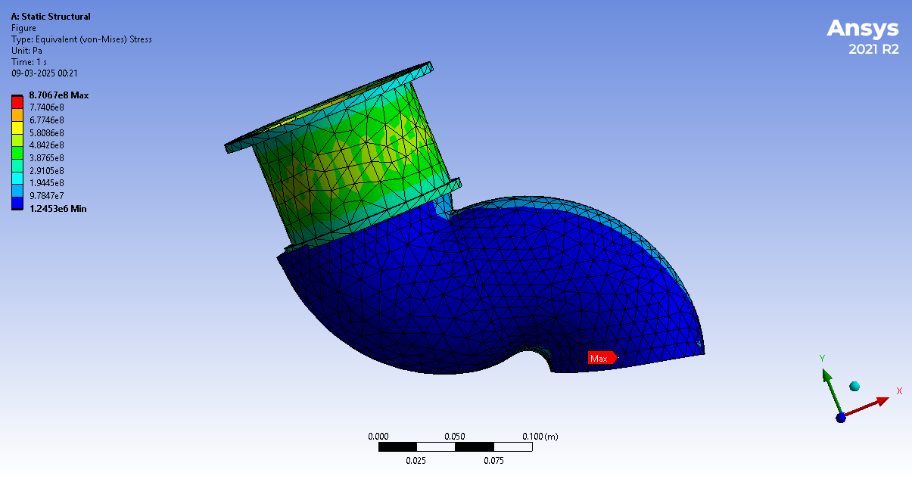

About Me
Mechanical Engineering graduate from Anna University with hands-on experience in CAD, FEA, and product development. Former Graduate Apprentice at ISRO's Wind Tunnel Data Division. Passionate about solving real-world engineering problems through design, simulation, and prototyping.
Technical Skills
- CAD: SolidWorks, AutoCAD, CATIA
- Simulation: ANSYS (Structural, Thermal, CFD)
- Programming: MATLAB, Python (Basics)
- Design: GD&T, DFM/DFA, BOM, 3D Printing
Projects
- Drone 3D Modeling: Designed in CATIA V5 and rendered in KeyShot 
- Fruit Plucker: CAD model, 3D printed prototype using SolidWorks
- Fruit Plucker: CAD model, 3D printed prototype using SolidWorks
- Fruit Plucker: CAD model, 3D printed prototype using SolidWorks
- Fruit Plucker: CAD model, 3D printed prototype using SolidWorks
- Off-Road Utility Vehicle Frame: CAD and FEA simulation using SolidWorks & ANSYS
- Off-Road Utility Vehicle Frame: CAD and FEA simulation using SolidWorks & ANSYS
- Elbow Pipe: Structural and thermal analysis using ANSYS 
- Elbow Pipe: Structural and thermal analysis using ANSYS 
- Elbow Pipe: Structural and thermal analysis using ANSYS 


Experience
Graduate Apprentice – Mechanical Design Engineer
ISRO – Wind Tunnel Data Division, Trivandrum
June 2023 – June 2024
- Worked on wind tunnel models and data acquisition systems
- Used SolidWorks for mechanical design and ANSYS for FEA
- Supported aerodynamic testing and component analysis
Certifications
- AutoCAD & SolidWorks – CADD Centre
- ANSYS Structural & Thermal Analysis – CADD Centre
Media Showcase
Contact
Email: mhd.arsath@gmail.com
LinkedIn: linkedin.com/in/mohamed-arsath